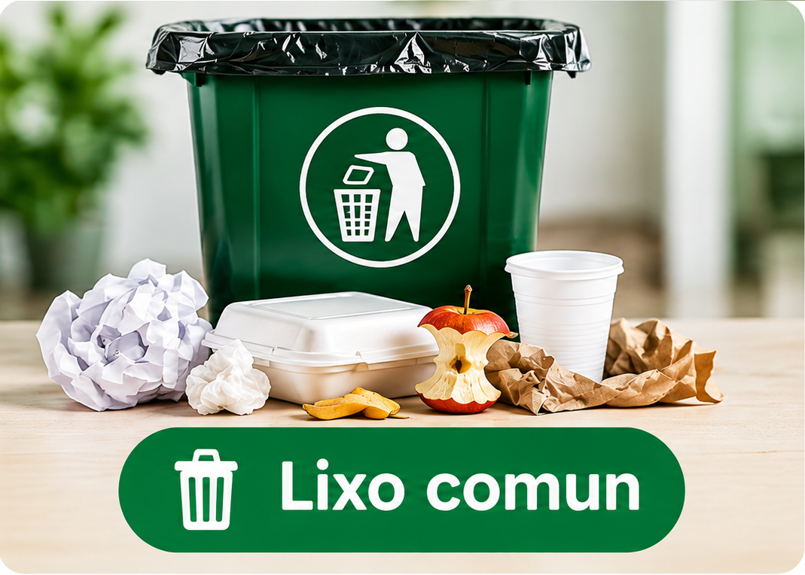
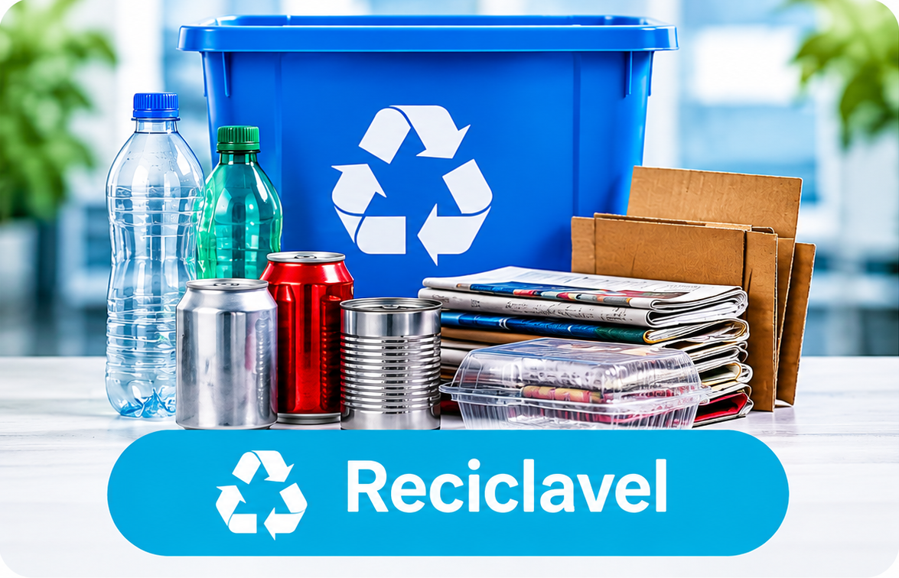
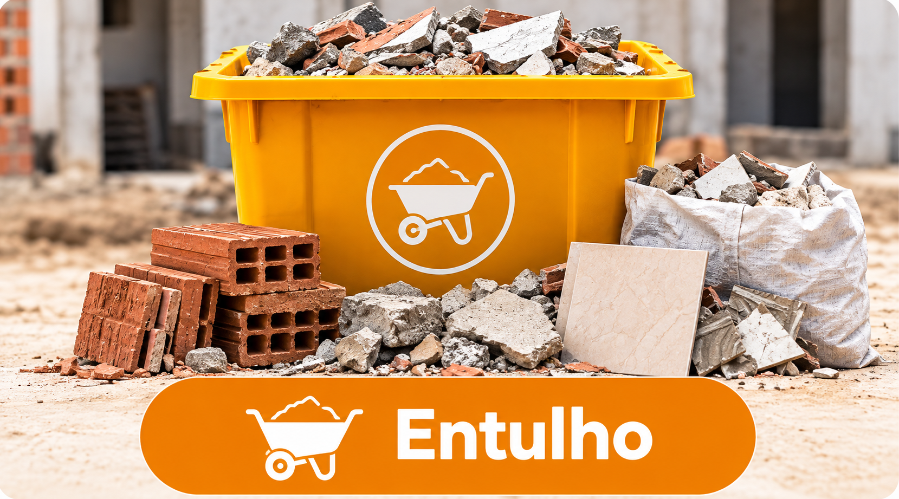

Lixo comum
Segunda e quinta-feira.

Segunda e quinta-feira.

Terça e sexta-feira.

Sob agendamento.
| Tipo de resíduo | Dias da semana | Horário |
|---|---|---|
| Lixo comum | Segunda e quinta-feira | 07h às 11h |
| Reciclável | Terça e sexta-feira | 08h às 12h |
| Entulho | Sob agendamento | A combinar |